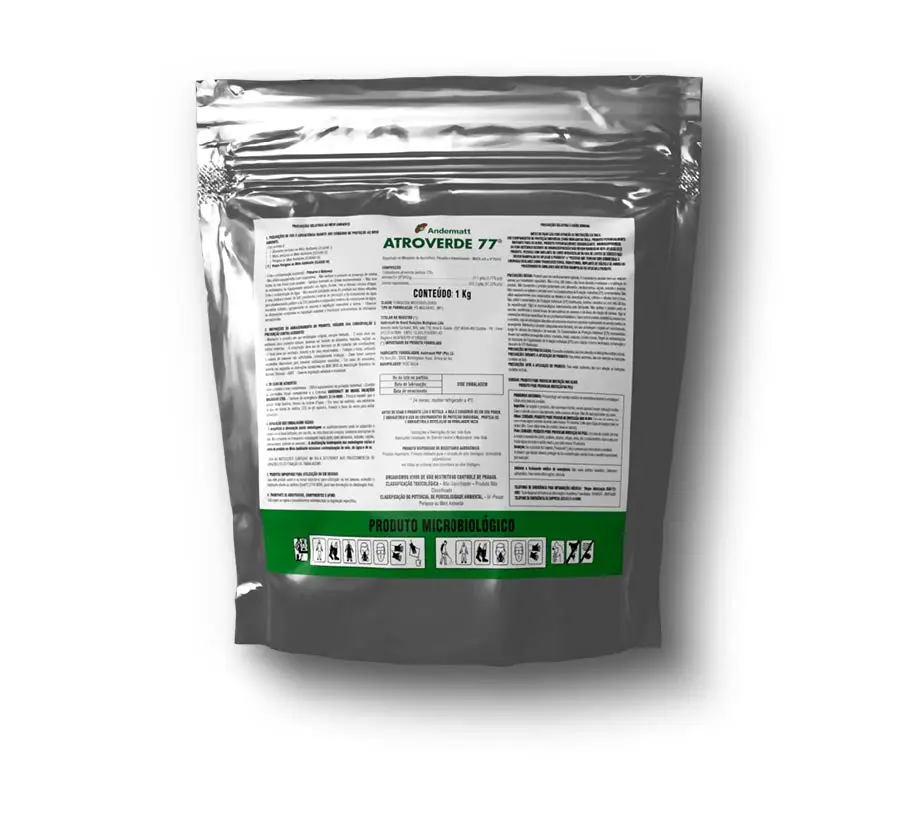

Trichoderma atroviride cepa 77B.
Aislada de vid para dominar en vid
y tomate.

A diferencia de otras trichodermas de suelo, la 77B fue aislada de la parte aérea de la vid en un monte convencional, otorgándole una resistencia superior a la desecación y radiación UV.
Desarrollada específicamente para proteger racimos y frutos en cultivos de alto valor donde la sanidad es crítica.
Acción contundente contra la podredumbre gris (Botrytis cinerea), ocupando los sitios de infección antes que el patógeno.
Formulación sólida (Polvo) que garantiza mayor estabilidad, viabilidad de esporas y vida útil comparado con líquidos.
Su origen aéreo le permite colonizar heridas de poda y órganos florales más rápido que otras cepas.
Crea una barrera física viva sobre hojas y racimos, impidiendo la entrada de Botrytis.
Detecta y destruye activamente las hifas del hongo patógeno mediante enzimas líticas.
Gracias a su aislamiento original en vid, tolera condiciones de estrés hídrico y UV mejor que cepas de suelo.
🔬
Colonización de Heridas de Poda
Protección preventiva eficaz
Atroverde es una herramienta clave para reducir la carga química en programas de exportación de uva de mesa y vino.
| Cepa | Trichoderma atroviride cepa 77B (Aislada de Vid) |
| Concentración | 2 x 109 ufc/g |
| Formulación | Gránulos Dispersables (WG) - Polvo |
| Cultivos Objetivo | Vid, Tomate (Solanáceas), Berries, Frutales. |
| Target Principal | Botrytis cinerea, enfermedades de madera, patógenos de suelo. |
DISTRIBUIDOR OFICIAL
"Calidad Suiza formulada para la agricultura global. Atroverde es un producto del Grupo Andermatt."
Contacte a nuestro equipo técnico para diseñar un programa de aplicaciones a medida para su viñedo o cultivo.
Contactar a Ventas